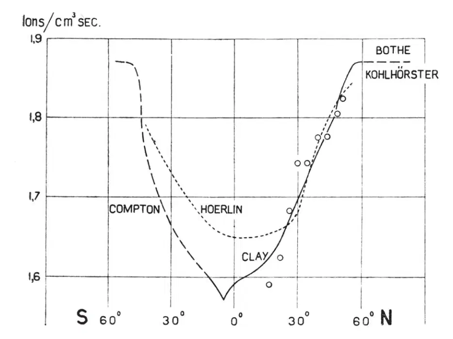

中文
中文J. A. Prins
Editor’s Note
Earlier experiments by Jacob Clay, Arthur Compton and others had suggested that the flux of cosmic rays has a minimum close to the equator. Here J. A. Prins reports results measured using an ionisation chamber carried by the S.S. Springfontein during a voyage from Holland to South Africa, which also showed a clear minimum near the equator. Unfortunately, he says, his apparatus had broken down, and he could not gather data from southern latitudes, which might have helped clarify an apparent difference noted by other researchers between the flux in the two hemispheres. But the results did suggest that most cosmic rays were charged particles, which would be influenced by the Earth’s magnetic field and find penetration easiest near the poles. 中文
IT was found for the first time by Clay1 on voyages between Holland and Java that the intensity of cosmic radiation has a minimum in the neighbourhood of the magnetic equator. The extensive survey directed by Compton2 confirmed the existence of this “latitude effect” and showed it to be more pronounced at higher altitude. More accurate results at sea-level are due to an investigation of Clay and Berlage3. As this again refers to the line from Holland to Java, I thought it would be worth while to perform analogous measurements on a trip from Holland to South Africa. During this investigation Hoerlin4 published results he obtained on the line Peru–Strait of Magellan–Hamburg. These results and those of the other authors as given by Clay are represented in Fig. 1 by continuous curves, my own results by open circles. Clearly the latter lie somewhat closer to Clay’s curve than to Hoerlin’s. 中文

Fig. 1. Latitude effect of cosmic radiation. Circles indicate results of author. Vertical scale indicates number of pairs of ions in normal air. 中文
Unfortunately, my apparatus broke down in the tropics, so I have not been able to get evidence on the remarkable difference between the southern and northern hemispheres as indicated by Hoerlin’s results. Though we may feel satisfied that an equatorial minimum of the same order of magnitude is found by all investigators (indicating that the cosmic radiation consists largely of a cosmic rain of charged particles) it would seem that an accurate repetition of this kind of measurement to obtain the exact shape of the curve is not superfluous. 中文
Regarding my observations, the following particulars may be given. The ionisation chamber had a volume of 3 litres and contained argon at a pressure of 30 atm. It was shielded by 8 cm. of iron and was placed in a hut on board the S.S. Springfontein of the Holland Africa line, the deck over it being of negligible thickness. The wall of the ionisation chamber was brought to 120 v. and the ionisation current collected on an insulated rod connected to a Lindemann electrometer and to a small capacity (4 cm.). To start an observation, the earthing key of the rod was opened and a stop-watch set running at the same moment. The electrometer was kept at zero by gradually applying a potential to the capacity so as to compensate the charge due to the ionisation current. After some time (about 6 min.) the potential (about 3 v.) was read on a voltmeter. From this the number of ions produced in the chamber per cm.3 per sec. may be deduced, assuming saturation. This number is called the “intensity” of cosmic radiation. A small correction for barometric pressure was applied to it (2.4 percent for 1 cm. mercury). In the graph in Fig. 1 these values (like those of Hoerlin) have been multiplied by such a factor (1/33.2) as to make the value at 50° coincide with the value given by Clay for normal air. 中文
I wish to thank the Groninger Universiteitsfonds for a grant of money, Prof. Coster for allowing the apparatus to be made in the workshop of his laboratory, Prof. Clay for some kind advice and finally the directors of the Holland Africa line and the crew of the S.S. Springfontein for their kind collaboration. 中文
(132, 781; 1933)
J. A. Prins: Natuurkundig Laboratorium der Rijks-Universiteit, Groningen, Oct. 19.
References:
1. Clay, J., Proc. Amsterdam, 30, 1115 (1927); 31, 1091 (1928).
2. Compton, A. H., Phys. Rev., 43, 387 (1933).
3. Clay, J., and Berlage, H. P., Naturwiss., 20, 687 (1932); Clay, J., Naturwiss., 21, 43 (1933).
4. Hoerlin, H., Nature, 132, 61 (July 8, 1933).